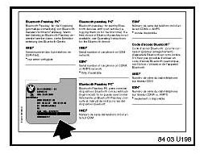

Cell Phone - Accept/Ignore Call Flashes For A Second
SI B84 15 07Communication Systems
August 2007
Technical Service
SUBJECT
Accept / Ignore Call Flashes on the BM for a Second When Receiving an Incoming Call
MODEL
E46 (3 Series) with Premium Package (ZPP) or BMW Assist (SA 639) and Navigation (SA609)
E53 (X5) with Premium Package (ZPP) or BMW Assist (SA 639) and Navigation (SA609)
E83 (X3) with Premium Package (ZPP) or BMW Assist (SA 639) and Navigation (SA609)
E85, E86 (Z4) with Premium Package (ZPP) or BMW Assist (SA 639) and Navigation (SA609)
SITUATION
The customer may complain that when receiving a Bluetooth(R) phone call, the Board Monitor (BM) displays an option to 'Accept' or 'Ignore' the phone call. The message is only displayed for approximately one second and then disappears.
Note:
This only affects TCU part number 84 10 9 129 851.
CAUSE
Software error in the Telematics Control Unit (TCU). The TCU should not have sent the message to the Board Monitor (BM) to display the option to 'Accept' or 'Ignore' the call. The option is not an available selection on the BM.
PROCEDURE
In case of a customer complaint, follow the below procedure:
1. Verify the customer's complaint.
2. Perform a short test using the DISplus or GT1.
3. Print the ID page of the TCU which shows the last 7 digits of the TCU part number.
4. Check the label on the TCU, if TCU part number 84 10 9 129 851 is installed, the TCU should be replaced.
5. It is NOT necessary to obtain a Part Replacement Authorization (TeileClearing) for this specific issue. Refer to the Warranty section of this bulletin for more details. Additional information can be found in SI B84 23 05 (Enhanced Support for BMW Assist Telematics Control Unit (TCU) with Bluetooth & CPT9000 Phone Systems).
6. Refer to TIS (RA 84 11...) for the TCU replacement procedure.
7. Before installing the new TCU, remove one copy of the Electronic Serial Number (ESN) label and place it on the repair order for reference during warranty claim entry. You will be asked for the new TCU "ESN" when submitting a claim via DCSnet. Refer to SI B01 10 05 for more details.

8. The second ESN label of the TCU should be affixed over the existing label in the Owner's Manual insert (P/N 01 49 0 157 963).
9. Complete the TCU installation
10. Using Progman V26.01.00 or higher, code the complete vehicle. Refer to SI B09 05 01 "Coding, Individualization and Programming", Procedure E.
11. Test the BMW Assist service for proper operation by placing a test call (press the Roadside Assistance "Wrench" button). Make sure the BMW Assist Response Center has received the correct MIN/MDN, VIN and location of the vehicle. Have the representative update their records as needed.
^ If a TCU is replaced on a vehicle with an inactive BMW Assist account and a BMW Assist call is made, the call will be routed to an automated system until the TCU is deactivated.
^ For customers who would like to renew BMW Assist services, refer to SI B84 22 05 (Reactivation of BMW Assist Services).
PARTS INFORMATION
WARRANTY INFORMATION
Covered under the terms of the BMW New Vehicle Limited Warranty.
Please refer to the latest KSD for all applicable labor operations and allowances.
If the appropriate labor operation is not contained in KSD, then a work time labor operation should be used.
Defect Code 84 11 27 11 00
Part replacement authorization is NOT required. Do NOT submit a TeileClearing PuMA case. A copy of the diagnostic report (short test) and a copy of the TCU ID page must be kept with the Repair Order (RO) and FASTA data must be transmitted. When submitting a warranty claim, please note the following information in the comments section:
^ SI B84 15 07 (BM displays Accept / Ignore Call)

Disclaimer